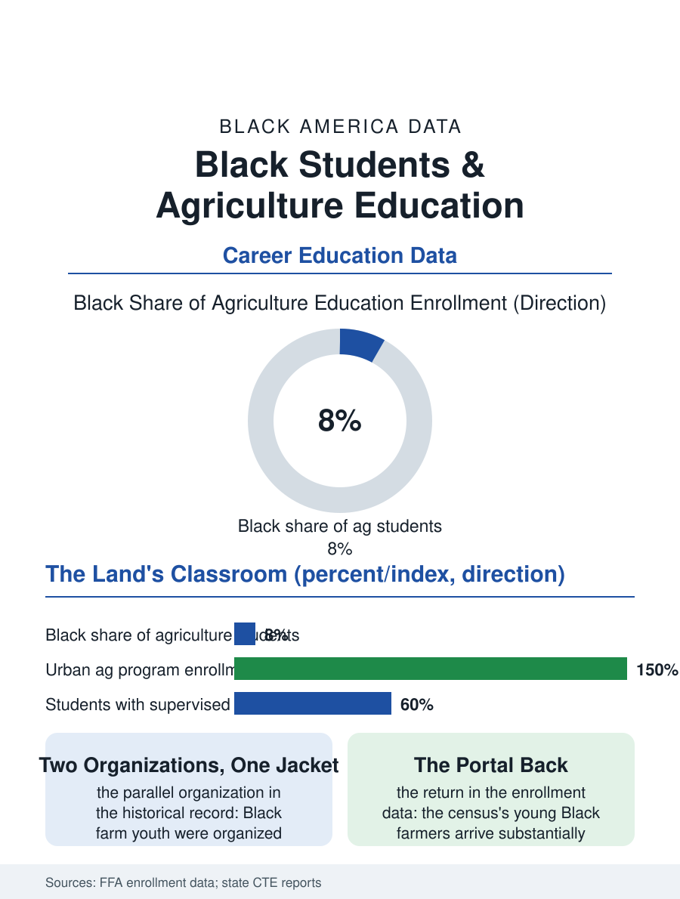

Black Education
The Portal Back: Black Students and Agriculture Education
The blue jacket on the land that was lost, the urban greenhouse as the portal back. The agriculture education file.

Agriculture education is the school system's oldest vocational file and the Black student's most historically loaded: the FFA chapter and the agricultural science classroom sit on the land the farmers file lost, and their current revival, in the urban agriculture programs as much as the rural ones, is an argument about who the land's knowledge belongs to now. This article reads the agriculture education file.
The Chapter and the Land
The historical file carries the segregation's imprint in its structure: the Black farm youth of the Jim Crow South were organized in the New Farmers of America, the parallel organization to the FFA, until the merger of the civil rights era folded the two into one jacket whose blue the Black student now wears in chapters across the rural South and, increasingly, the urban programs. The enrollment data give the current picture: agriculture students nationally number in the hundreds of thousands, the Black share running below the rural population's own, concentrated in the Southern states where the land file's history sits, and the urban agriculture programs, the school farms and the hydroponic classrooms of the food justice era, enrolling the city student whose grandparents left the land in the migration's own decision, a return in curriculum form that the programs' own literature treats with the seriousness the irony deserves. The teacher's own file mirrors the land's: the agriculture instructor in the Black Belt's schools is frequently a product of the land-grant's Black university and of a farm family himself, teaching the science in the county his family's acres left, a biography the students read as the curriculum's credibility. The program's funding formula, the Perkins file's allocations weighted by the district's poverty, gives the urban greenhouse and the rural lab their different capitals, and the state FFA association's foundation, funded by the agribusiness the graduates will work for, closes the loop the enrollment begins.
What the Program Teaches Now
The curriculum's content has followed the industry's: the animal and plant sciences remain, joined by the agricultural mechanics, the food science, and the natural resources tracks whose employment files are the modern industry's, the supervised agricultural experience, the student's own project enterprise, being the pedagogy's distinctive instrument, a business run inside the education in the pattern of the other files' practica. The land laboratory is the program's asset and its equity file in one: the school farm's acres, inherited in the land-grant era's distribution, are held disproportionately by the districts the funding file favors, while the landless programs improvise the greenhouse and the raised bed, a difference the project data reflect in the enterprises' scale. The competition file, the judging and the shows, distributes its ribbons by the animal's cost in the pattern of the pay-to-play file, the show steer being the agricultural version of the travel team, with the same scholarship funds and the same quiet exclusions at the margin.
The Knowledge's Return
The agriculture file closes on the enrollment's meaning for the farmers file's forward data, because the new Black farmers of the census's young edge are arriving substantially through these classrooms and their urban cousins, the FFA jacket and the hydroponic certificate being the unlikely portals of the land's return generation, whose enterprises, the specialty and the agritourism and the community food files, differ from their great-grandparents' cotton in everything but the soil's claim. The program's defenders and its critics share the file's last datum: the knowledge was always the land's second crop, and its distribution was rationed with the land itself. The enrollment counts rise in the urban programs each year. The file's last entry is the student in the blue jacket at the county fair's ring, showing the animal her project raised, in the county where her family's land was lost within her great-grandmother's memory, the ribbon's color being, for the file's purposes, beside the point entirely. The fair's premium book, the prices the animals bring at the auction where the community's businesses bid them up as the town's investment in its own youth, is the program's scholarship fund in its oldest form. The auction's gavel is the curriculum's final examination, taken in public, priced by the neighbors. The record stands in the program's own hand.
More in Black Education
Black Educational Attainment: High School Parity, the College Gap
About 89 percent of Black adults hold a high school diploma and one in four holds a bachelor's degree or higher — the attainment ladder, the college completion gap, and the generational trend.
Historically Black Colleges and Universities: Enrollment and Degrees
More than 100 HBCUs enroll roughly 290,000 students and award about one in six Black bachelor's degrees — an outsized share from a small sector. The federal education data.
Black College Enrollment: 2.4 Million Students
About 2.4 million Black students are enrolled in American colleges — nearly two-thirds of them women. The NCES enrollment data by sector, level, and trend.
Source: National FFA Organization enrollment data; state career and technical education agriculture program reports.